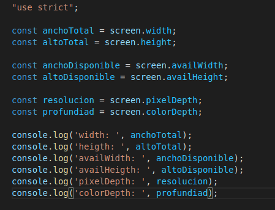

Lección 23 - Objeto Screen
Definición: Es un objeto que nos permite acceder a ciertas propiedades de la pantalla
Metodos
- screen.width: Ancho total de la pantalla
- screen.heigth: Alto total de la pantalla
- screen.availWidth: Ancho disponible de la pantalla
- screen.availHeigth: Alto disponible de la pantalla
- screen.pixelDepth: Resolució de color de la pantalla
- screen.colorDegth: Profundidad de bits de la paleta de colores.
Codigo
